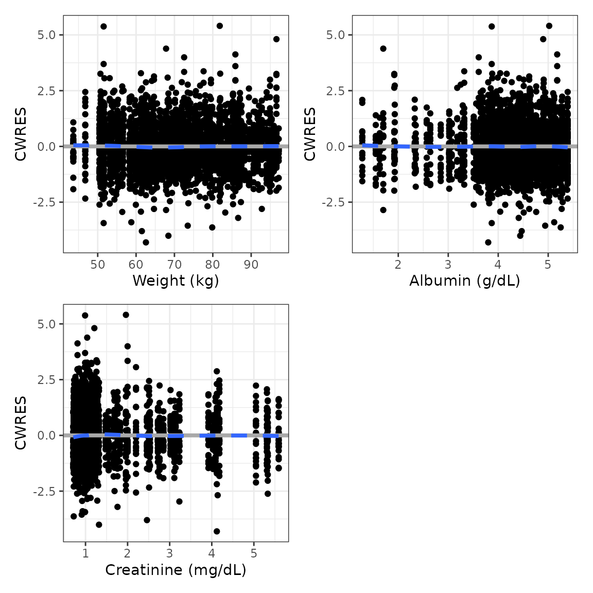
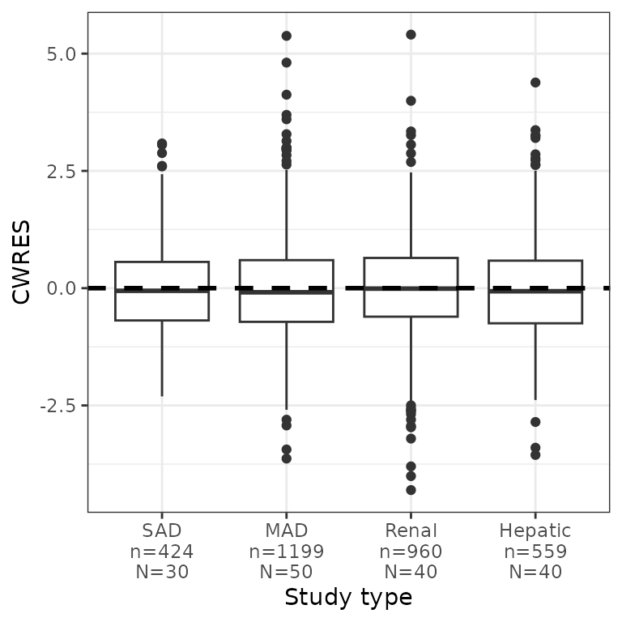
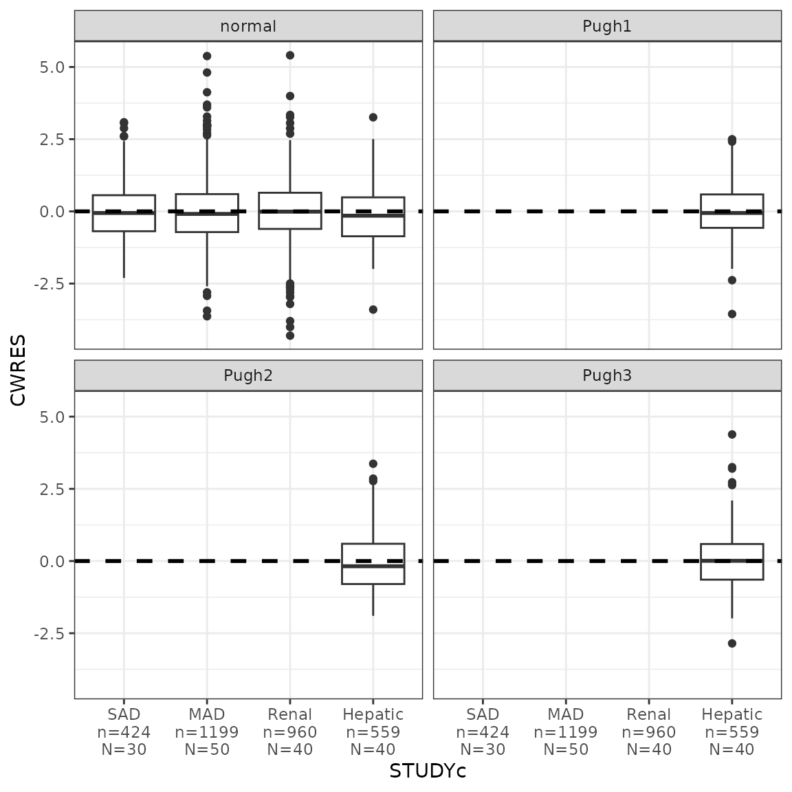
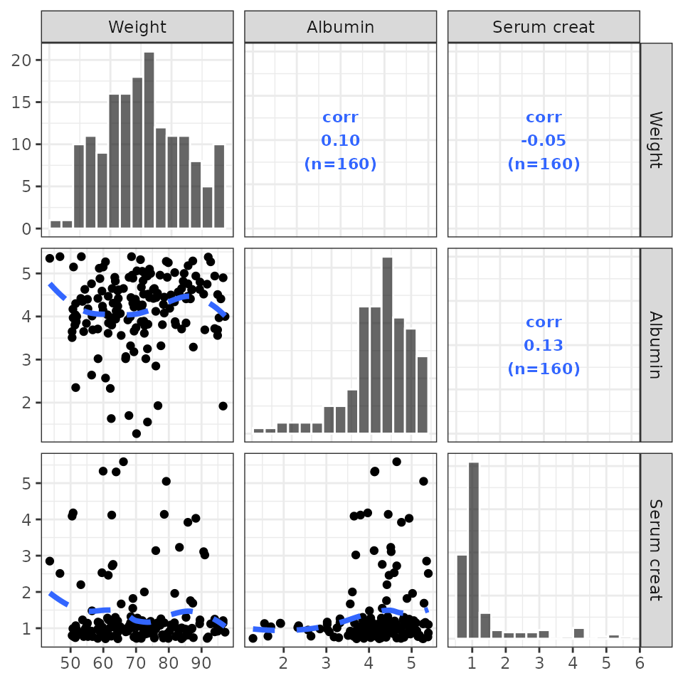
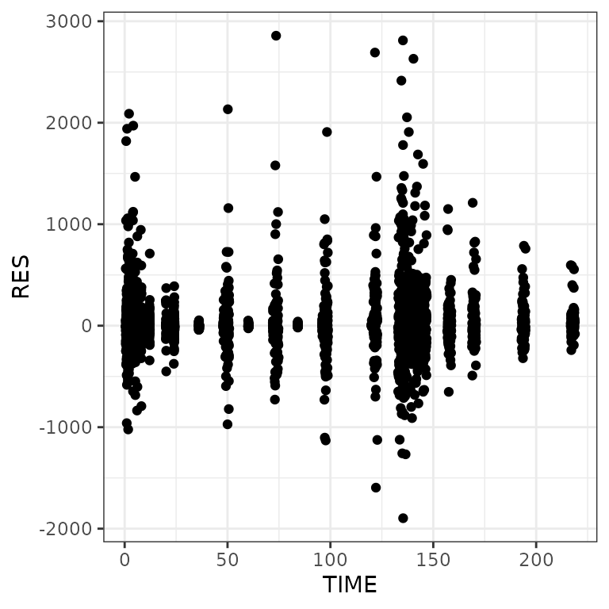
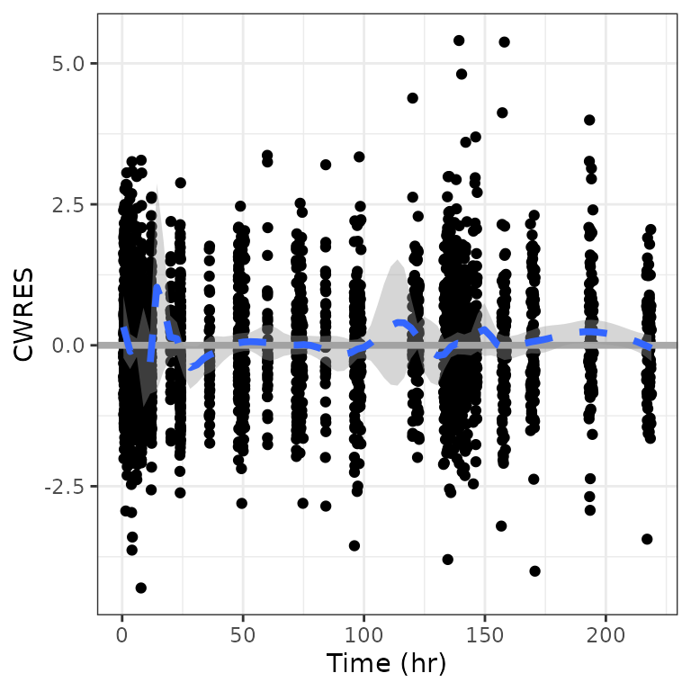

Setup and packages
. Error in get(paste0(generic, ".", class), envir = get_method_env()) :
. object 'type_sum.accel' not foundExample data in the package
df <- pmplots_data_obs() %>% mutate(CWRES = CWRESI)
id <- pmplots_data_id()
dayx <- defx(breaks = seq(0,168,24))
.yname <- "MRG1557 (ng/mL)"
etas <- c("ETA1//ETA-CL", "ETA2//ETA-V2", "ETA3//ETA-KA")
covs <- c("WT//Weight (kg)", "ALB//Albumin (g/dL)", "SCR//Creatinine (mg/dL)")Override the df and id objects in the above
chunk
## Nothing here
col//title specification
This is a way to specify the column name for source data along with the axis label
col_label("CL//Clearance (L)"). [1] "CL" "Clearance (L)"When only the column is given, then the column name will be used for the column title:
col_label("WT"). [1] "WT" "WT"Generate using the yspec package
You can also pull col//title data from a
yspec object. Load the yspec package and
generate an example data specification object
library(yspec)
spec <- ys_help$spec()Typically, you’ll want to select a subset of columns and then call
axis_col_labs()
You should install the yspec to use this
functionality.
Fill in CWRES if it doesn’t exist
dat <- mutate(df, CWRES = NULL)
cwresi_time(df).
[1m
[22m`geom_smooth()` using formula = 'y ~ x'
cwres_time(dat). Creating CWRES column from CWRESI
.
[1m
[22m`geom_smooth()` using formula = 'y ~ x'
Observed vs predicted
Observed versus population predicted (dv_pred)
dv_pred(df, yname = .yname)Observed versus population predicted - log/log
dv_pred(df, loglog=TRUE, yname = .yname)Observed versus individual predicted (dv_ipred)
dv_ipred(df, yname=.yname)Residual plots
Residuals versus time (res_time)
res_time(df)Residuals versus time after first dose (res_tafd)
res_tafd(df)Residuals versus time after dose (res_tad)
res_tad(df)Residuals versus population predicted (res_pred)
res_pred(df)RES versus continuous covariate (res_cont)
res_cont(df, x="WT//Weight (kg)")This function is also vectorized in x.
RES by categorical covariate (res_cat)
dplyr::count(df, STUDYc).
[38;5;246m# A tibble: 4 × 2
[39m
. STUDYc n
.
[3m
[38;5;246m<fct>
[39m
[23m
[3m
[38;5;246m<int>
[39m
[23m
.
[38;5;250m1
[39m SAD 424
.
[38;5;250m2
[39m MAD
[4m1
[24m199
.
[38;5;250m3
[39m Renal 960
.
[38;5;250m4
[39m Hepatic 559
res_cat(df, x="STUDYc//Study type")Residual histogram (res_hist)
res_hist(df)Weighted residuals
Weighted residuals versus time (wres_time)
wres_time(df) Weighted residuals versus time after dose
(wres_tad)
wres_tad(df)Weighted residuals versus population predicted
(wres_pred)
wres_pred(df)WRES versus continuous covariate (wres_cont)
This function is also vectorized in x.
wres_cont(df, x="WT//Weight (kg)")WRES by categorical covariate (wres_cat)
wres_cat(df, x="STUDYc//Study type")Weighted residual histogram (wres_hist)
wres_hist(df)
Conditional weighted residuals (CWRES)
CWRES versus time (cwres_time)
cwres_time(df)CWRES versus time after dose (cwres_tad)
cwres_tad(df)CWRES versus continuous covariate (cwres_cont)
cwres_cont(df, x="WT//Weight (kg)")Vectorized version
cwres_cont(df, covs) %>% pm_grid(ncol=2)
CWRES by categorical covariate (cwres_cat)
cwres_cat(df, x="STUDYc//Study type")
cwres_cat(df, x="STUDYc//Study type", shown=FALSE)Vectorized version
. $STUDYc.
. $RFConditional weighted residual histogram
(cwres_hist)
cwres_hist(df)CWRES versus population predicted (cwres_pred)
cwres_pred(df)CWRES QQ plot (cwres_q)
cwres_q(df)NPDE plots
NPDE versus TIME (npde_time)
npde_time(df)NPDE versus TAD (npde_tad)
npde_tad(df)NPDE versus TAFD (npde_tafd)
npde_tafd(df)NPDE versus PRED (npde_pred)
npde_pred(df)NPDE versus continuous variable (npde_cont)
npde_cont(df, "WT")NPDE versus categorical variable (npde_cat)
npde_cat(df, "STUDYc")QQ-plot with NPDE (npde_q)
npde_q(df)NPDE histogram (npde_hist)
npde_hist(df)ETA plots
etas <- c("ETA1//ETA-CL", "ETA2//ETA-V2", "ETA3//ETA-KA")
covs <- c("WT//Weight (kg)", "ALB//Albumin (g/dL)", "SCR//Creatinine (mg/dL)")
DV versus time (dv_time)
Basic plot
dv_time(df, yname = .yname)Faceted
dv_time(df, yname="MRG1557 (ng/mL)") + facet_wrap(~DOSE, scales="free_x")NOTE this will not work as you expect; the labels are wrong.
cwres_cat(df, x = "STUDYc") + facet_wrap(~CPc)
The only way to get this right is
cwres_cat(df, x = "STUDYc", shown=FALSE) + facet_wrap(~CPc)log-Scale
dv_time(df, yname="MRG1557 (ng/mL)", log=TRUE) + facet_wrap(~STUDYc)DV-PRED-IPRED
- This returns a list of plots; we show only one here (the first 9 IDs) as an example
dd1 <- filter(df, ID <= 15)
dv_pred_ipred(dd1, nrow = 3, ncol = 3, ylab = "Concentration (ng/mL)", log_y=TRUE). $`1`.
. $`2`Wrapped plots
ETA versus continuous
wrap_eta_cont(df, y = "ETA1", x = c("WT", "ALB"), scales="free_x")Continuous on categorical
wrap_cont_cat(df, y = c("WT", "CRCL", "AAG"), x = "STUDYc", ncol = 2) Continuous on continuous
wrap_cont_cont(df, y = "CWRES" , x = c("WT", "CRCL", "AAG"), ncol = 2, scales="free_x") Residuals versus time
wrap_res_time(df, y = c("RES", "WRES", "CWRES"), ncol = 2, scales="free_y") DV/PRED and DV/IPRED
wrap_dv_preds(df, ncol=1)Use labels in the strip
wrap_eta_cont(
df,
y = "ETA1",
x = c("WT//Weight (kg)", "ALB//Albumin (g/dL)"),
scales="free_x",
use_labels=TRUE
)Pairs plots
This is a simple wrapper around GGally::ggpairs with
some customizations that have been developed internally at Metrum over
the years.
pairs_plot(id, c("WT//Weight", "ALB//Albumin", "SCR//Serum creat"))
Customized lower triangle
Pass a function that customizes the scatter plots on the lower triangle. This function should accept a gg object and add a geom to it
my_lower <- function(p) {
p + geom_point(aes(color = STUDYc)) +
geom_smooth(se = FALSE, color = "black")
}
pairs_plot(id, c("WT", "ALB"), lower_plot = my_lower)Vectorized plots
pm_scatter(df, x = "TIME", y = c("RES", "WRES", "CWRES")). $RES
.
. $WRES.
. $CWRESData summary
Continuous variable by categorical variable
(cont_cat)
cont_cat(id, x="STUDYc", y="WT")General histogram (cont_hist)
cont_hist(id, x = "WT", bins = 20)Some customization
Latex (including Greek letters) in axis title
dv_pred(df, x = "PRED//Concentration ($\\mu$g)")Latex in wrapped plots
y <- c("WT//Weight (kg)", "BMI//BMI (kg/m$^2$)", "SCR//SCR (g/dL)")
wrap_cont_time(df, y = y, use_labels=TRUE)Add layers
p <- ggplot(df, aes(PRED,DV)) + geom_point() + pm_theme()smooth
layer_s(p)Drop extra layers
dv_pred(df, smooth=NULL)
dv_pred(df, abline=NULL)
cwres_time(df, hline = NULL)
dv_pred(df, abline=NULL, smooth = NULL)Modify layer specs
For example, change the values of argument for
geom_smooth
cwres_time(df, smooth = list(method = "loess", span = 0.1, se=TRUE))

Custom breaks
Default breaks:
dv_time(df)Break every 3 days
dv_time(df, xby=72)
Custom breaks and limits
Replicate look and feel
p <- ggplot(df, aes(IPRED,DV)) + geom_point()
pTheme
p + pm_theme()
Smooth
p + pm_smooth()Abline
p + pm_abline()Horizontal reference line
ggplot(df, aes(TIME,CWRES)) + geom_point() + pm_hline()Rotate x and y axis labels
Rotate to vertical
We are typically rotating the tick labels on the x-axis and frequently it is convenient to ask for a totally vertical rendering
cwres_cat(df, x = "STUDYc") +
facet_wrap(~CPc) + rot_x(vertical = TRUE)Standard axis titles
. [1] "TIME//Time {xunit}". [1] "TAD//Time after dose {xunit}". [1] "TAFD//Time after first dose {xunit}". [1] "RES//Residual". [1] "WRES//Weighted residual". [1] "CWRES//CWRES". [1] "CWRESI//CWRES with interaction". [1] "NPDE//NPDE". [1] "DV//Observed {yname}". [1] "PRED//Population predicted {xname}". [1] "IPRED//Individual predicted {xname}"Log breaks
logbr3(). [1] 1e-10 3e-10 1e-09 3e-09 1e-08 3e-08 1e-07 3e-07 1e-06 3e-06 1e-05 3e-05
. [13] 1e-04 3e-04 1e-03 3e-03 1e-02 3e-02 1e-01 3e-01 1e+00 3e+00 1e+01 3e+01
. [25] 1e+02 3e+02 1e+03 3e+03 1e+04 3e+04 1e+05 3e+05 1e+06 3e+06 1e+07 3e+07
. [37] 1e+08 3e+08 1e+09 3e+09 1e+10 3e+10
logbr(). [1] 1e-10 1e-09 1e-08 1e-07 1e-06 1e-05 1e-04 1e-03 1e-02 1e-01 1e+00 1e+01
. [13] 1e+02 1e+03 1e+04 1e+05 1e+06 1e+07 1e+08 1e+09 1e+10